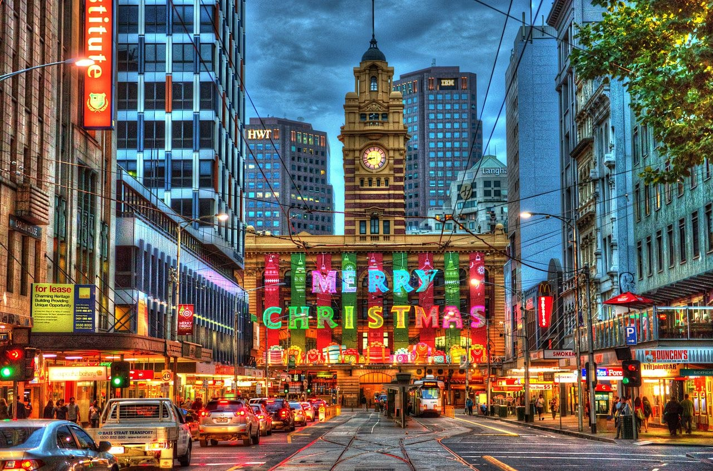
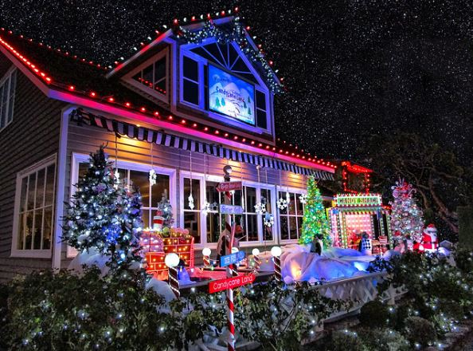
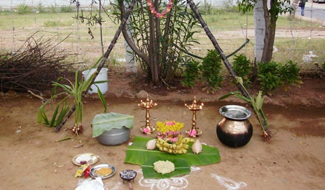
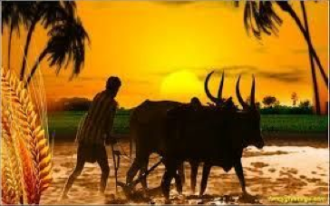

Christmas in Paris isn’t about loud parties or large celebrations. Christmas markets can be found all over major cities, and France has some of the biggest markets in all of Europe, but besides that, Christmas is a bit quieter in France.On Christmas Eve, a yule log is carried into homes across France and soaked in red wine to make the log smell good as it burns throughout the night. Candles and fires are kept light and food is left out in the hopes that Mary and the Baby Jesus may stop by. A glass of wine is left out for Père Noël (Father Christmas) who leaves presents under the tree and small gifts inside the shoes of good children.
Caroling is an important tradition, but in Australia, caroling isn’t just neighbors going door-to-door it’s a cultural event. Carols by Candlelight started in Melbourne in 1938, and since then has grown into a tradition across the country. On Christmas Eve people gather outdoors to sing Carols by candlelight. The larger events that take place in major cities like Sydney are broadcast on TV across the country. On Christmas day loved ones and families gather to eat a feast at around noon. Most people have a cold meal or barbecue seafood like lobsters and prawns.Australians hang wreaths on their front doors and sometimes go out Christmas carol singing on Christmas Eve. People also decorate their houses and gardens with Christmas Trees and Christmas lights. Neighbors sometimes have little competitions to see who has got the best light display.
There is no dearth of celebration in Delhi, but December brings with it more festivity than most months; December brings with it Christmas, and new beginnings and plans for the new year. Praise the lord for the twelve days of Christmas which, for the unfamiliar, is the accepted festive period - starting on the 25th of December until the 5th of January. Christmas is around the corner and everyone would sure be planning to visit a church nearby. And for those who’re planning to attend the Eucharist Mass and be a part of a holy Christmas celebration in Delhi, can head towards the beautiful and the biggest church of the capital city – the Sacred Heart Cathedral. From the joyous carol singing to ending the mass with the delicious cake and coffee, relish every bit of the grand celebration on the Christmas eve.
Many Americans, especially Christians will go to Church to celebrate the birth of Jesus at Christmas. Many churches have special Christmas Carol services and events where the story of Christmas is told. In New England (the American States of Massachusetts, Connecticut, Rhode Island, Vermont, New Hampshire and Maine), there are shops called 'Christmas Shops' that only sell Christmas decorations and toys all the year round! Americans also send out Christmas Cards, like Carol singing and there's the unusual custom of the Christmas Pickle! People in America like to decorate the outsides of their houses with lights and sometimes even statues of Santa Claus, Snowmen and Reindeer. Some cookies and glass of milk are often left out as a snack for Santa on Christmas Eve!
"Cheers to new beginnings"
London, England
London rings in the new year with an astonishing fireworks display that’s launched from the London Eye. The fireworks can be seen from rooftops and balconies all across London, so you don’t need to leave your hotel to get a good view. If you want to get out there and really experience the display, the best views are from Westminster Bridge and the north embankment of the River Thames (opposite the London Eye).
Dubai,UAE
Dubai is one of the most exciting cities to ring in the new year! High rise buildings, mesmerizing fireworks, and the overall pomp and show makes it sizzle with excitement. There is so much to do for everyone during Dubai New Year that it has become one of the most happening year-end destinations in the world. New Year in Dubai is a grand affair. Dubai can easily be your personalized NYE celebrations getaway.
Sydney, Australia
Australia is one of the first countries in the world to experience New Year’s Eve making Sydney the first major city in the world to greet a new year (sorry New Zealand, you aren’t as big!). The city hosts one of the largest firework displays in the world. They last almost a full fifteen minutes and are best viewed from one of the boats in the harbor or surrounding hills. After the display, the celebrations usually last until dawn.
The first day of the Pongal Festival in Tamilnadu is known as Bhogi Pandigai or Bhogi Pongal. It marks the last day of the Tamil month Marghazi during which people assemble and lights bonfire made of wood and cow dung to burn the unused household items.People clean their houses, paint and embellish them with beautiful decorative to give a festive look. On this day, people offer prayers to the god of rains, Lord Indra with thanks and hopes for plentiful rains in the year ahead. Bhogi is also observed on the same day in Andhra Pradesh. Money is often placed into a mixture of treats and is poured over children. The children then separate and collect the money and sweet fruits.
The second day is known as the Surya Pongal or Thai Pongal which is considered as the main festivity of the Pongal Festival. It is the first day of the Tamil calendar month Thai and coincides with Makara Sankranti which is widely celebrated all over India. On Thai Pongal, people decorate their houses with banana or mango leaves and embellish the entrance with colourful Kolams. The special sweet dish called ‘Pongal’ is prepared in a traditional earthen pot using freshly harvested rice grains, milk and jaggery which is allowed to boil and overflow out of the vessel, symbolizing their wish of greater fortunes in the year ahead. The pot is typically decorated by tying a turmeric plant or flower garland and is offered to the Sun.
The third day- Mattu Pongal is celebrated the day after Surya Pongal. Mattu refers to "cow, bullock, cattle", and Tamil Hindus regard cattle as sources of wealth for providing dairy products, fertilizer, transportation and agricultural aid. On Mattu Pongal, cattle are decorated – sometimes with flower garlands or painted horns, they are offered bananas, a special meal and worshipped. Some decorate their cows with manjalthanni (turmeric water) and oil. Shikakai apply kungumam (kumkum) to their foreheads, paint their horns, and feed them a mixture of venn pongal, jaggery, honey, banana and other fruits. Others bathe their cattle and prostrate before them with words of thanks for the help with the harvest.
Kanum Pongal, sometimes called the Kanu Pongal, the fourth day of the festival, marks the end of Pongal festivities for the year. The word kanum (kaanum) in this context means "to visit." Many families hold reunions on this day. Communities organize social events to strengthen mutual bonds. Villagers cut and consume farm fresh sugarcane during social gatherings. Relatives, friends and neighbors visit to greet, while youngsters go out to meet seniors among the relatives and neighborhoods to pay respects and seek blessings, while some elders give the visiting children some pocket change as a gift.
Jallikattu (or sallikkattu), also known as eru thazhuvuthal and mañcuvirattu, is a disputed traditional event in which a bull (Bos indicus), such as the Pulikulam or Kangayam breeds, is released into a crowd of people, and multiple human participants attempt to grab the large hump on the bull's back with both arms and hang on to it while the bull attempts to escape. Participants hold the hump for as long as possible, attempting to bring the bull to a stop. In some cases, participants must ride long enough to remove flags on the bull's horns. Jallikattu is typically practised in the Indian state of Tamil Nadu as a part of Pongal celebrations on Mattu Pongal day, which occurs annually in January.
‘Jallikattu‘ and ‘Katha Kalakshepam’ in temples are the prime attraction of the Pongal Festival in Thanjavur. The Department of Tourism Government of Tamilnadu organizes Pongal Tourist Festival in Thanjavur which is worth attending. The Festival includes village visits, traditional games, Pongal demonstrations, bullock cart ride and folk dances.